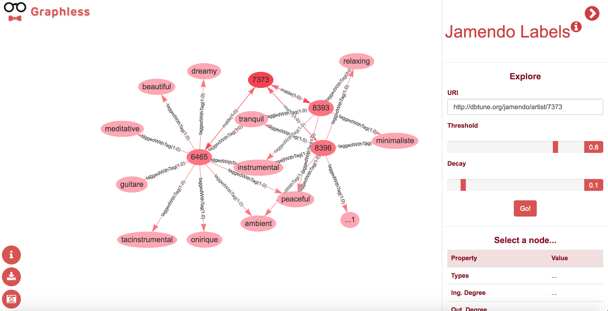

Data visualisation over semantic datasets and Knowledge Graphs becomes a challenging task as the data volume increases. The amount of nodes and edges linking them produce overwhelming diagrams in which understanding the information displayed is cumbersome. In this work we introduce Graphless, a visualisation interface that exploits the statistical information of the usage of instances and relations to produce graphical summaries of entities. The system supports several heuristics, providing different visualisations, according to configurable parameters.
Introduction
Graphless is an online tool that provides a user interface for graphically exploring RDF-based datasets. The main goal of this tool is to provide a way for summarizing entity graphs,supporting a better understanding of how individuals and their relations are stated. In a way, our aim is to reduce big portions of data to a more easy to digest representation, trying to preserve the most relevant elements while doing so.
For doing so, we have to consider the data features that semantic datasets have. In the most basic and common scenario, semantic data is represented as a graph of individuals and properties linking them. Even when an schema, defined as an ontology, could be expected, having it is not always the case. Many available SPARQL endpoints hosting datasets do not contain the ontology (or ontologies) used to generate them. In this work we aim to provide a generic approach for producing visualization summaries. We rely only on the statistical features that are common to RDF data graphs. We consider the following two main features:
Connectivity degree:
the number of ingoing and outgoing links from/to a given node is an indicator of the relevance of the node in the dataset. Central nodes (e.g Countries as birthplaces, Years for dates) tend to have many incoming links, as they are referenced by many other instances. Also, nodes of prominent entities usually assert many outgoing properties, either to other entities or to literal values (e.g. Authors to the books they wrote, Places to their names in different languages).
Property usage:
the distribution of properties along the instances on a dataset is, as expected, not strictly homogeneous. Properties such as name or birthplace are more likely to be instantiated on instances of type Person than others such as capital of or foundation year. Thus, classes allow us to estimate which are the most used properties for their instances.
We use these two factors to analyze the structure of the data graph, and based on the results obtained, the system decides which element to depict on the final diagram. From the two explanations above, we derive the following tentative assumptions when summarizing data visualizations, which are the base of our system.
Users are more interested in exploring nodes that have more connections, as they are more relevant.
Users are more interested in visualizing the most frequently used properties for the nodes depicted, as they provide more insights.
These two assumptions may seem quite straightforward, but as we discuss in this work, they allow to build informative data visualizations, by using then for analyzing the data graph. Whereas other features could be also included (e.g. ontology taxonomy, discriminative properties), these two ones are appropriate as they often apply to any given dataset.
Graphless online GUI example.
The final goal of the system presented in this work is to generate summarized graph diagrams, to provide a better visual exploration experience. An illustrative example of the final product is shown in , which depicts the Graphless GUI with a summary of an entity from a semantic dataset. The remainder of this paper will introduce how to calculate these summaries and display them, explaining as well how the system is being currently used for the Jamendo dataset, which contains a large collection of data about records, music artists, songs, lyrics and genres.
Analyzing the graph
In order for the interface to be able to filter and display the data properly, the target graph has to be analyzed according to the metrics described previously. This process starts by retrieving the list resources and their corresponding types from the dataset. Using this information the system counts how many times each property is instantiated, keeping track of the type of the subject of the triple as well as of the object (only for object properties).
In this process, the system records the statistical usage of properties, both as ingoing and outgoing links of instances of each type. We define a property as outgoing for a given type when an instance of such type is used as the subject of a triple. Similarly, outgoing properties of a type are those that appear on triples with an object belonging to that type.
With this information, the system is able to generate a profile for each type in the dataset, assigning weights to each type-property combination. In order to have a relative measure, raw counts are normalized for each type, generating a weight value from 0 to 1. Values closer to 1 would imply highly used properties, and thus highly relevant, following the discussion introduced previous section. Those properties with weights close to 0 imply that these properties are low in relevance as they are rarely used.
The result of this process is exemplified in which displays the statistic analysis of the Jamendo dataset, which we will describe in . The table depicts the property counts for the class mo:MusicArtist in the dataset, including the total and normalized counts for both ingoing and outgoing properties.
Property
Prop.Type
Count
Normalized weight
foaf:made
Outgoing
5786
1.0
foaf:based_near
Outgoing
3244
0.5606
foaf:name
Outgoing
3505
0.6057
foaf:homepage
Outgoing
3006
0.5195
foaf:img
Outgoing
2982
0.5154
mo:biography
Outgoing
485
0.0838
owl:sameAs
Outgoing
119
0.0206
foaf:maker
Ingoing
5786
1.0
Usage of properties for class mo:MusicArtist.
Besides the property usage for each type, the system also analyzes how many properties link to each resource in the dataset, obtaining the ingoing and outgoing degree for each node (i.e. individual) in the graph. These measurements indicate the connectivity degree of the node, and serve as indicators of the relevance of the node in the graph. Intuitively, the more connected a node is, the more relevant it is.
shows the information generated during this process for a set of resources belonging to different classes. As explained for the previous process, the system normalizes the raw counts, so as to have a consistent measurement of the importance of the node in the graph. This is achieved by dividing each ingoing and outgoing count by the corresponding maximum value found on the graph.
Resource
Type
Ingoing Deg.
Outgoing Deg.
Norm. In. Deg.
Norm. In. Deg.
http://dbtune.org/jamendo/record/3280
mo:Record
1
109
0.00009
1.0
http://dbtune.org/jamendo/artist/1442
mo:MusicArtist
25
54
0.0022
0.2660
http://dbtune.org/jamendo/lyrics/23855
mo:Lyrics
1
1
0.00009
0.0091
Ingoing and outgoing degree for different resources
Once these two analysis (i.e. properties usage and connectivity degree) have been conducted, their results are combined, assigning to each node on the graph the corresponding information. That is, each node in the graph will be annotated with the connectivity degrees and the usage weights for each property instantiated for it, both for ingoing and outgoing properties. As discussed in the property weights annotations are done using the relationship features of Neo4j.
http://dbtune.org/jamendo/artist/1442" />
Properties of http://dbtune.org/jamendo/artist/1442
As depicted in , each property of the resource http://dbtune.org/jamendo/artist/1442 is annotated with their corresponding weights, along with the ingoing and outgoing degrees of the resource. These parameters can be used to filter and reduce the elements to be displayed on the final diagram, as we introduce in the following section.
Heuristics
The results obtained by the statistical analysis are the base for a set of algorithms that explore the graph to generate a summarized visualization. The current version of the system includes two different algorithms that can be used to explore a dataset. The following sections introduce them. In both cases, the algorithm requires a root node to be selected, as the starting point to traverse the graph. Depending on the algorithm, different parameters can be defined. As well, when selecting the properties to be displayed, the system considers both ingoing and outgoing ones, using the different weights associated to them.
Top-K heuristic
This algorithm implements an straightforward heuristic for traversing the graph, selecting only the top relevant properties on each step. Starting on the root node, the algorithm selects the K top properties of the node, which link to new nodes. The process recursively executes the same steps obtaining new nodes. In order to restrict the amount of nodes being explored, the algorithim limits the number of steps in the process to a maximum depth, defining how deep the graph can be explored from the starting node. shows an example of the Top K algorithm, starting from the node http://dbtune.org/jamendo/artist/7373, selecting the two top properties, with a max depth of five, as shown on the right-hand side of the picture. That is, for each node the system picks only the two most relevant properties, and keeps on traversing the graph until it reaches nodes separated by five steps from the root resource. In this case, to calculate which properties are the most relevant, the system multiplies the weight of the property by the weight of the node that it links to, providing a combined measure of the importance of the property and the target node in the graph.
Example of the Top K algorithm
Threshold heuristic
This algorithm selects all the properties that have a weight higher than a given threshold value, and retrieves all their associated nodes. In the first step, the given threshold parameter is used to filter. After that, for all the retrieved nodes the process is repeated, increasing the threshold value as specified by the decay parameter. This way, the threshold is higher on each step, until it reaches the maximum value for a property weight (i.e. 1.0), which will stop the process. shows the diagram resulting of using this algorithm for the same resource from the previous example (i.e. http://dbtune.org/jamendo/artist/7373) with a base threshold of 0.8, and a decay of 0.1. Thus, for the first iteration only properties with a value higher than 0.8 will be selected, then only those higher than 0.9, and once the value 1.0 is reached, the system stops, as this is the maximum weight for any property.

Example of the Threshold algorithm
When comparing and , we can observe how the system provides different visualizations based on the same dataset, by applying different heuristics. In the coming sections we will discuss about how this system is implemented and how the usage of a graph-oriented database allows to store the required annotations and perform queries using them efficiently.
Implementation
Data management
The information extracted from the process described in has to be stored in a way that can be accessed efficiently. This requires a data system able to support the annotation of properties and nodes. Both things could be done using just RDF over the original dataset, using custom properties for annotating nodes and reification statements for the properties. However we decided to use a more graph-oriented solution, providing better performance and ease of use when querying the data. The use of extra properties, and specially the use of reification, would increase the complexity of SPARQL queries, difficulting the process of exploring the graph.
For these reasons, we selected Neo4j as our data backend solution, for storing the dataset and the related annotations. This graph database offers the required features for storing the nodes and the properties (known as relationships according to Neo4j's naming conventions), with annotations for both of them. These annotations can be used directly in Cypher queries, the query language used in Neo4j. , shows the two types queries used for the Top-K and Threshold algorithms respectively. As we can see, we can exploit the annotations over the properties ("r" in both examples) to either sort by weight and select the top two properties (top-k heuristic) or to filter based on the weight being higher than a given value (threshold heuristic).
MATCH (n:JARLABS)-[r:JARLABS]->(x:JARLABS) WHERE n.nodeid = '...' RETURN ... ORDER BY r.weight DESC LIMIT 2
MATCH (n:JARLABS)-[r:JARLABS]->(x:JARLABS) WHERE n.nodeid = '...' AND r.weight > 0.8 RETURN ...
Cypher queries (shortened using "…")
User interface
The frontend of the system is developed as a web interface, which aims to provide a clean and clear visualization experience to the final user. The graphs visualization is supported by vis.js, a popular Javascript library for drawing statical reports, graphs and relation diagrams on the web. The interface itself is composed by two parts, the main area, in which graphs are displayed, and the right menu, which is hidden by default in order to maximize the visualisation space.
As depicted in the GUI figures in this paper, the graphs are displayed in the main area, following a shade color scheme. The root node, the one the user queried, is displayed with the strongest red hue. As the distance from this root node increases, the color code of the node gets lighter and lighter. Circles and nodes are used to differentiate between object nodes and literal ones respectively. In both cases, the local name or the literal value are used as the node label. Properties are also labeled with their name and weight.
All nodes are clickable objects. On double click, the right menu is opened and the information about the selected node is displayed, as seen in .
Right menu information panel
The code, implemented in Java, is divided in two different projects, for the analysis process and interface, which are available online.
Jamendo Results
As we have mentioned before, the current version of Graphless includes the Jamendo dataset, which contains information about records, musical artists, torrents, lyrics, signals, tags, documents and tracks. It combines five different ontologies and contains 412,564 object nodes, 251,698 literals, and a total of 1,267,012 instantiated relations.
The data ingestion process, undertaken during the analysis process, starts by querying the public Jamendo endpoint, from which the system retrieves all the subjects, objects, and their related properties and types. This is done by means of SPARQL queries, which are executed with a time delay between them to avoid overloading the system.
Jamendo individuals and properties can be visualized on the currently available version of Graphless, using the two exploratory algorithms described above. The final dataset is also available as a Neo4j database
Related work
This work is inspired by the SDType system, which uses statistical analysis of datasets to infer missing entity types. In our case, we flip this approach, using the types of the entities as indicator of the importance of the properties asserted for their individuals. This way, we can select those that are commonly used for each type.
As discussed before, the final goal of our system is to provide visualization summaries of entities. In this direction, several approaches have been proposed for entity summarisation. LinkSUM and pursue a goal similar to the one exposed in this work, aiming to reduce the number of properties displayed for an entity. In this case, authors propose to use the well-known PageRank algorithm for calculating the relevance of properties. This score is then used for selecting the top properties of an entity, without traversing the graph, as we do in this work. A similar approach, obtaining lower results than LinkSUM is introduced in FACES
Other systems have been proposed for graph summarisation in the context of Linked Data . This work combines graph simplification, ranking of triples, and property selection, providing a semi-automatic way of generating summaries by the user. A more recent approach has been proposed for summarising semantic entities in a graphical manner. Following the VOWL notation for ontology visualization, authors introduce the usage of zooming techniques for reducing the complexity of the graph being visualized. The system summarises the graph depending on the granularity selected, rather than on the relevance of the elements that compose the graph. The challenge this system faces and solves resides in preserving the meaning of the overall graph while merging different entities into a single one.
Discussion and Future Work
In this paper we introduce Graphless, a data visualization tool for semantic datasets, which combines statistical analysis and graph traverse heuristics to produce graph summaries. Combining these two approaches the system is able to provide smaller diagrams, which are easier to read and interpret.
This work represents a first version of the tool, in which only the Jamendo dataset has been included. We plan to extend the collection of datasets, including more representative ones, such as DBpedia. Our intuition is that a tool such as this would be of help specially in heterogeneous datasets, containing information from different sources and with a wide range of varied types and properties.
From the technical point of view, we plan to include new features, currently under development, such as the generation of RDF snippets from the visualizations. We also plan to support new algorithms implementing novel heuristics. Our final goal is to provide a programmable interface in which developers can integrate their algorithms based on the available data properties.
Finally, we are currently conducting a usability evaluation with several users, which will provide feedback for improving the tool.
Acknowledgments
This work was partially funded by the esTextAnalytics (RTC-2016-4952-7) project, from the Spanish State Investigation Agency of the MINECO and FEDER Funds.
References
Y Raimond, MB Sandler, Q Mary: A Web of Musical Information, ISMIR, 2008
Heiko Paulheim and Christian Bizer: Type Inference on Noisy RDF Data. In: Lecture notes in computer scienceThe Semantic Web - ISWC 2013 : 12th International Semantic Web Conference, Sydney, NSW, Australia, October 21-25, 2013, Proceedings, Part I; 510-525. Springer, Berlin [u.a.], 2013.
Web of Musical Information, ISMIR, 2008
Thalhammer, Andreas, Nelia Lasierra and Achim Rettinger. "LinkSUM: Using Link Analysis to Summarize Entity Data." ICWE (2016).
Thalhammer, Andreas and Achim Rettinger. "Browsing DBpedia Entities with Summaries." ESWC (2014).
Kalpa Gunaratna, Krishnaprasad Thirunarayan, and Amit Sheth. 2015. FACES: diversity-aware entity summarization using incremental hierarchical conceptual clustering. In Proceedings of the Twenty-Ninth AAAI Conference on Artificial Intelligence (AAAI'15). AAAI Press 116-122.
Vitalis Wiens, Steffen Lohmann, and Sören Auer. 2017. Semantic Zooming for Ontology Graph Visualizations. In Proceedings of the Knowledge Capture Conference (K-CAP 2017). ACM, New York, NY, USA, Article 4, 8 pages. DOI: https://doi.org/10.1145/3148011.3148015
Lohmann, S.; Link, V.; Marbach, E.; Negru, S.: WebVOWL: Web-Based Visualization of Ontologies. Proceedings of EKAW 2014 Satellite Events, LNAI 8982, pp. 154-158, Springer, 2015
Chawuthai R., Takeda H. (2016) RDF Graph Visualization by Interpreting Linked Data as Knowledge. In: Qi G., Kozaki K., Pan J., Yu S. (eds) Semantic Technology. JIST 2015. Lecture Notes in Computer Science, vol 9544. Springer, Cham
The following prefixes are used throughout the text: mo (http://purl.org/ontology/mo/), foaf (http://xmlns.com/foaf/0.1/), tag (http://www.holygoat.co.uk/owl/redwood/0.1/tags/), owl (http://www.w3.org/2002/07/owl#)